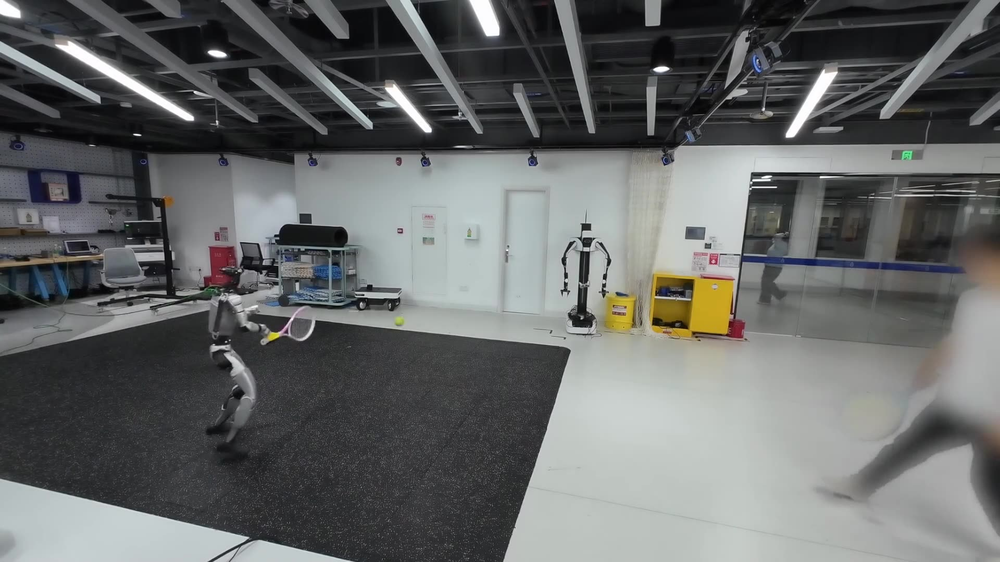
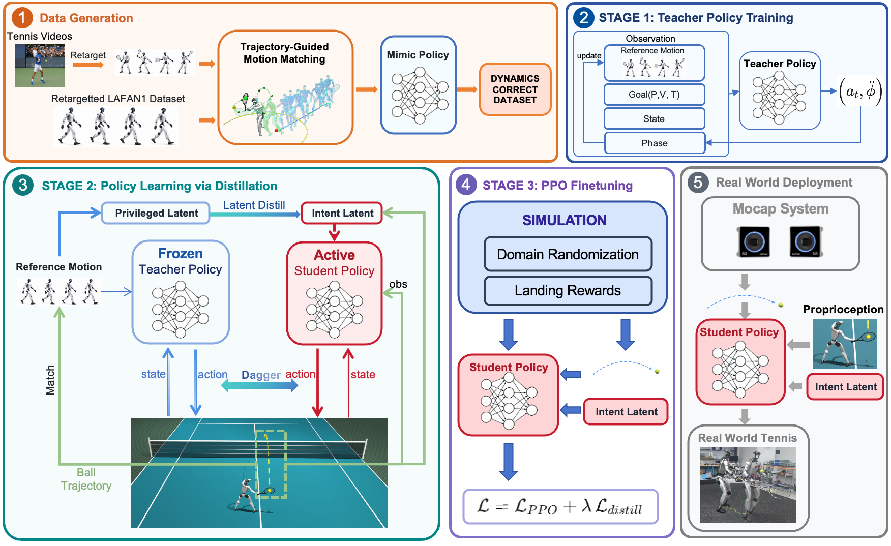

Time-adaptive teacher
Track dynamically corrected references while adapting motion phase to the target contact deadline.

ATHLETE composes generic LAFAN1 locomotion with strikes reconstructed from ordinary tennis videos into whole-body references, then distills them into one reactive policy that needs no reference motion at deployment.
From reusable motion to reactive tennis.
Humanoid tennis requires reactive whole-body coordination under rapidly changing ball dynamics, yet collecting task-specific motion-capture demonstrations that cover diverse approach states, contact locations, and timing conditions is costly. Inspired by how humans acquire new skills by combining reusable motor experience with task-specific demonstrations, we present ATHLETE, a framework for learning reactive humanoid tennis from generic locomotion data and ordinary tennis videos. ATHLETE combines LAFAN1 locomotion with video-derived striking motions and uses Trajectory-Guided Motion Matching (TGMM) to construct diverse task-conditioned whole-body references. These references are transformed into a reactive policy through physics-based teacher–student learning with online DAgger distillation, followed by PPO fine-tuning for the tennis task. The resulting policy responds directly to robot and ball observations without requiring reference-motion inputs at deployment. On a real humanoid robot, ATHLETE achieves forehand and backhand hit rates of 90.00% and 86.67%, respectively, and enables multi-shot rallies with human players. These results demonstrate the feasibility of learning dynamic humanoid sports skills from reusable locomotion experience and low-cost visual demonstrations.
Turn isolated skills into a complete approach-and-strike motion reference.
TWO MOTION SOURCES
For each sampled target ball, TGMM plans a root trajectory that satisfies strike, contact, and transition constraints. Motion matching then generates a whole-body motion reference that follows this trajectory and blends it with a striking motion reference, producing a complete approach-and-strike sequence.
Compose motion. Distill a reactive policy.

Track dynamically corrected references while adapting motion phase to the target contact deadline.
Use online DAgger and privileged representation alignment to transfer the teacher’s behavior to a policy driven by deployable observations.
Fine-tune with PPO, tennis-specific rewards, and domain randomization to improve contact precision and controlled returns.
Rally with the G1 in simulation.
Pick a landing target, serve, and watch the robot respond. The trained policy and physics simulation run entirely in your browser.
300 incoming balls: 159 forehand-side and 141 backhand-side trials.
Launch elevation: ≈37°–62° · Horizontal deviation: ≈−22°–22° · Initial ball speed: ≈5–7 m/s.
Target landing points: Gaussian sampling centered at (5, 0) m.
| Metric | Forehand | Backhand |
|---|---|---|
| Hit rate | 94.97% | 95.04% |
| Net clearance | 91.19% | 92.20% |
| Landing error | 1.150 m | 1.314 m |
| Sweet-spot distance | 5.61 cm | 6.54 cm |
Approach. Strike. Rally.
60 manually thrown balls: 30 backhand trials on the left and 30 forehand trials on the right.
Rates use all 30 trials per side. Net clearance does not imply an in-court landing.
Ten additional clips show the G1 exchanging shots with human players in the lab, coordinating footwork and racket swings to respond to different incoming balls.
Real robot: 60 thrown balls, ball and root pose from external motion capture, 50 Hz control. Rates use all balls as the denominator; net clearance does not imply an in-court landing.
Simulation: 300 balls under nominal physics. Distance metrics cover struck balls only; landing error is measured at the first bounce. The browser demo is an illustration, not the evaluation protocol.